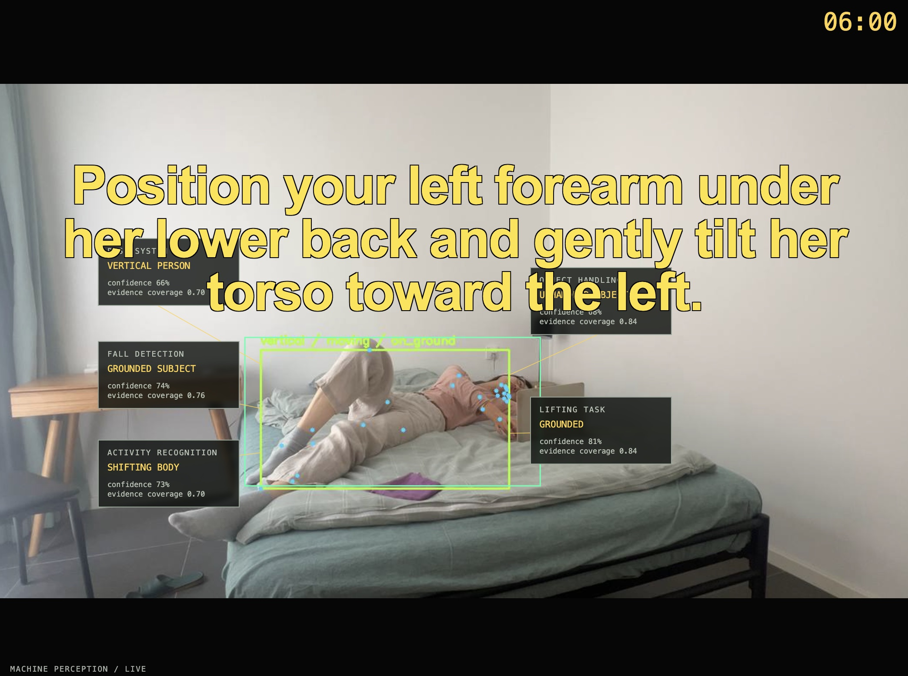
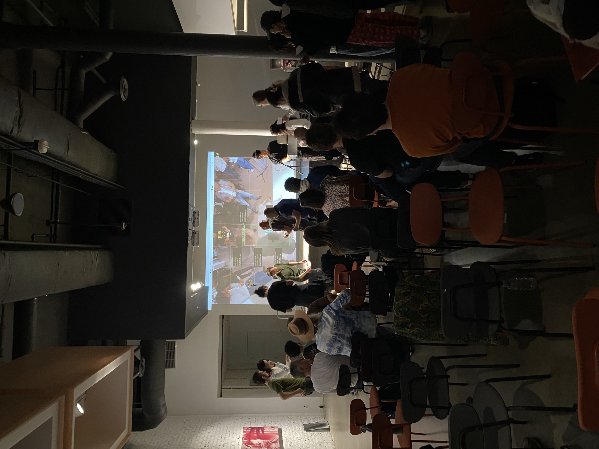
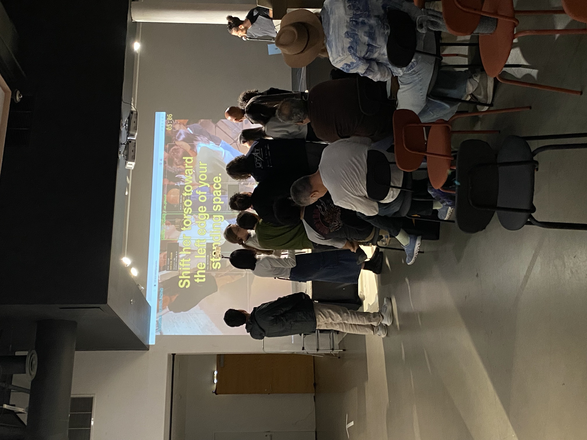
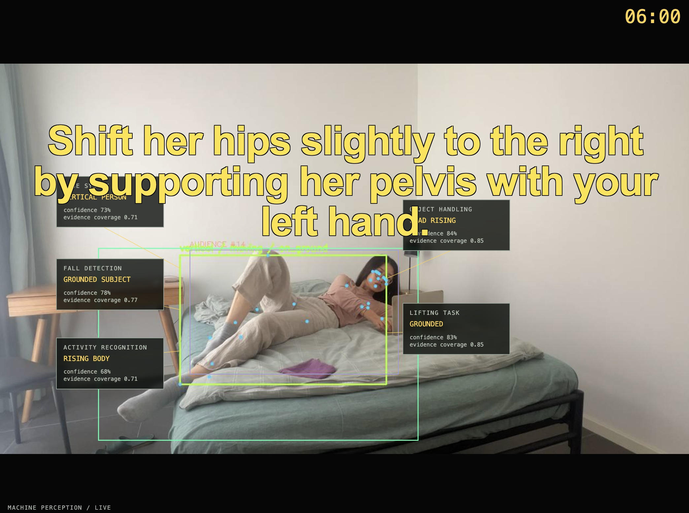
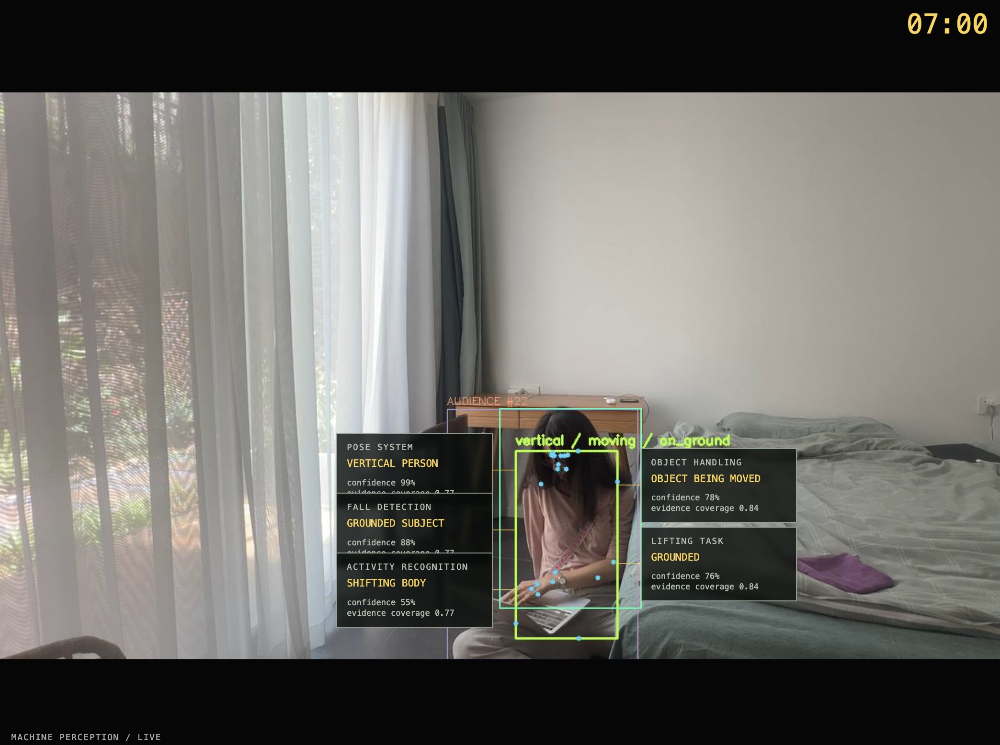
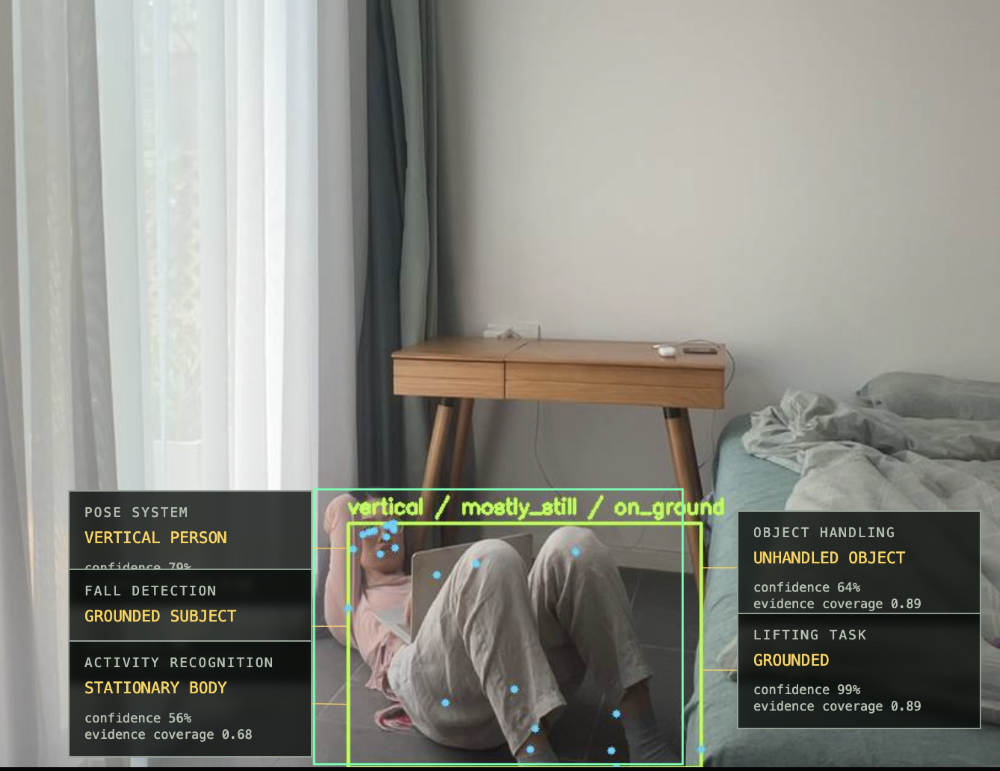
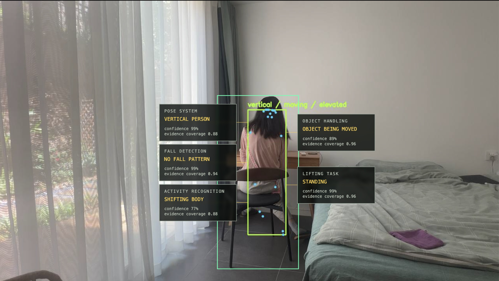
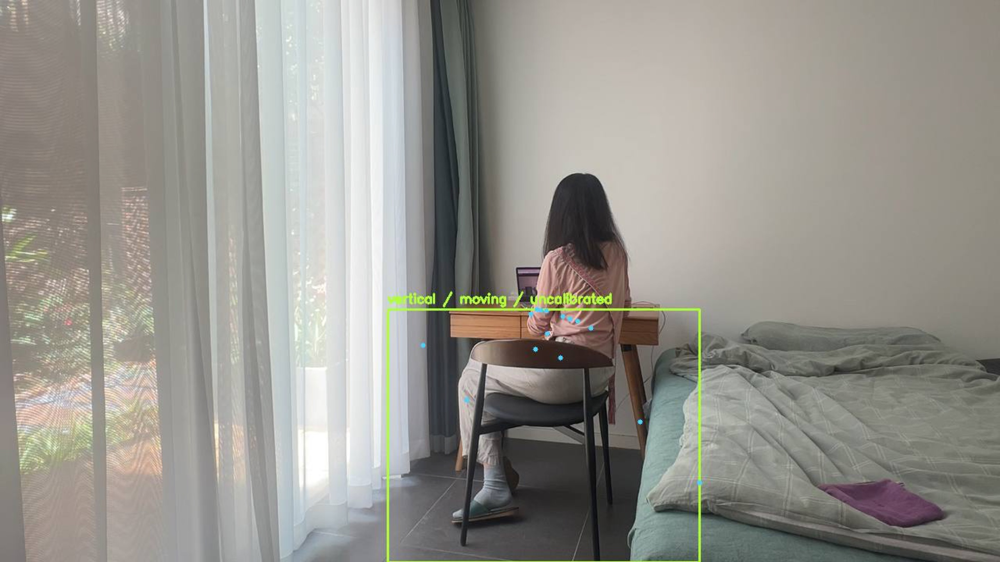
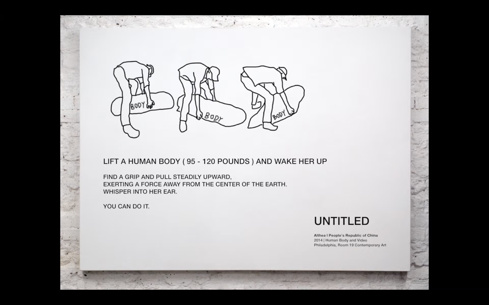

Lift A Human Body (130–150 lbs) and Wake Her Up
Lift A Human Body (130–150 lbs) and Wake Her Up is a performance in which audience members are instructed by a real-time computer vision system and generative language model to lift the artist’s body and “wake her up.”
The technical apparatus observes and analyzes the situation as it unfolds, identifying subjects, objects, movements, body parts, and possible intentions. From these observations, it generates instructions intended to mobilize the situation toward an end goal—“waking” somebody up—that has no clear definition. Audience members may follow, ignore, or improvise around these instructions. Their actions become new input, prompting the system to continually reassess the situation and recalibrate its plan for how to Lift A Human Body (130–150 lbs) and Wake Her Up.
The work was first conceived in 2014 as a classroom project titled Lift A Human Body (109–120 lbs) and Wake Her Up, in which the artist surrendered her body and allowed classmates to improvise collaborative movements toward the stated goal. Twelve years later, the analog performance was recontextualized within the framework of “computer theater” for an event convened by Halim Madi. In those twelve years, the artist gained weight, and the project gained computer eyes and brains.
How does AI understand the weightiness of a breathing body while you feel me across your arms, hands, shoulders, back, and legs?
Come bear my weight and handle my body.
The body can’t lift itself.
Presented at an evening of computer theater co-organized by Halim Madi and Helen Shewolf.


















Live performance photography: Helen Shewolf